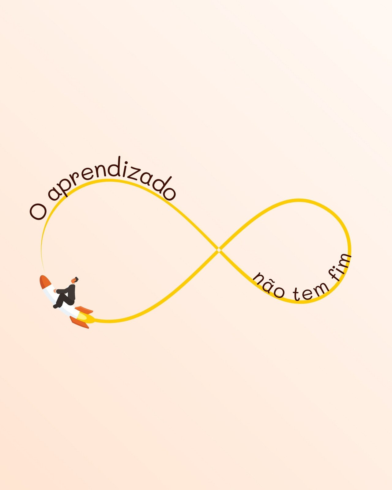

MOTIVAÇÃO NA EDUCAÇÃO
A gratidão é um sentimento poderoso e que abre portas para quem aprende a praticá-la. Afinal, quando você reconhece algo bom que te aconteceu, tende a continuar batalhando pelos seus sonhos. Para encontrar coragem de prosseguir, veja frases de motivação e gratidão e mantenha-se firme no seu propósito, celebrando tudo o que já conquistou!
Motivação e gratidão que revelam a força de se manter ativo
FORÇA
FÉ
CORAGEM
ACREDITE